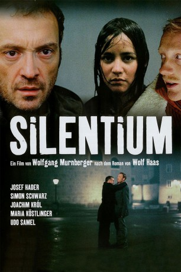

#7135 Silentium
 
 IMDB-Wertung: 7.6 / 10
IMDB-Wertung: 7.6 / 10  Metascore: 0
Metascore: 0 
Als der Schwiegersohn des Präsidenten der Salzburger Festspiele tot aufgefunden wird, geht man zunächst von Selbstmord aus, doch die Frau des Toten glaubt nicht daran – sie vermutet, dass ihr Mann ermordet wurde.Mit ihrem tollen Aussehen und etwas Charme wickelt sie den ehemaligen Polizisten Brenner um den Finger, damit sich dieser den Fall nochmal genau anguckt - zusammen mit seinem Kumpel Berti. Zumal erst kurz vor seinem Tod einige pikante Details aus seiner Zeit im Katholischen Kloster für Wirbel gesorgt hatte. Und Brenner stellt bei seinen Ermittlungen dann auch schnell fest, dass hier etwas faul ist und er auch selbst recht gefährlich lebt.
Jahr: 2004
Dauer: 112 Minuten
FSK: 16
Land: Österreich Studio: Senator FilmTonspuren:
Untertitel:
Auflösung: 1080p (1920x1080) Größe: 8960 MB
Genre: Thriller, Krimi
Regisseur: Wolfgang Murnberger
Drehbuch: Wolfgang Murnberger
Soundtrack:
Darsteller:
 Josef Hader als Simon Brenner
Josef Hader als Simon Brenner Simon Schwarz als Berti
Simon Schwarz als Berti Joachim Król als Sportpräfekt Fitz
Joachim Król als Sportpräfekt Fitz- Rosie Alvarez als Di Ding
 Georg Friedrich als Hausmeister Josef
Georg Friedrich als Hausmeister Josef Johannes Silberschneider als Inspektor Stronegger
Johannes Silberschneider als Inspektor Stronegger Karl Fischer als Killer Max
Karl Fischer als Killer Max- Christoph Schlingensief als Opernregisseur
 Herbert Fux als Taxifahrer
Herbert Fux als Taxifahrer- Danny Krausz als Dirigent
- Maria Köstlinger als Konstanze Dornhelm
 Udo Samel als Festspielpräsident
Udo Samel als Festspielpräsident Jürgen Tarrach als Opernsänger
Jürgen Tarrach als Opernsänger- Anne Bennent als Apothekerin
- Luka Omoto als Jungfrau
- Joachim Bißmeier als Regens
- Wolfgang S. Zechmayer als Killer Moritz
- Dirk Stermann als Zuhälter
- Werner Brix als Türsteher
- Wolf Haas als Spiritual
- Peter Traxler als Altregens
- Franz X. Schuch als Erzbischof Schorn
- Tini Kainrath als Opernsängerin
- Max Meyr als René
- Sonnie Kreibich als Übersetzerin
- Elias Pressler als Seminarist
- David Heissig als Seminarist
- Jutta Lin als Zimmermädchen
- Peter Streimel Weger als Gottlieb Dornhelm
- Gerhard Zemann als Kaufhauschef
- Martin Weinek als Abteilungsleiter
- Klaus Ortner als Schlepper
- Jonas Petersen als Drogenkäufer
- Marco Reisinger als Dealer
- Eve Namkorn als Philippinin
- Albert Weilguny als Polizist
- Karl Künstler als Zuhälter
- Hermes als Erzähler
Datei: X:\4-Tetralogie(A-K)\Brenner\Silentium (2004, FSK16, 1920x1080).mkv seit 28.09.2017
Festplatte: HD Collection-3(N-Z)-6(A-Z)
 Es gibt insgesamt 7 Filme in der Gruppe '4-Tetralogie(A-K)\Brenner'
Es gibt insgesamt 7 Filme in der Gruppe '4-Tetralogie(A-K)\Brenner'